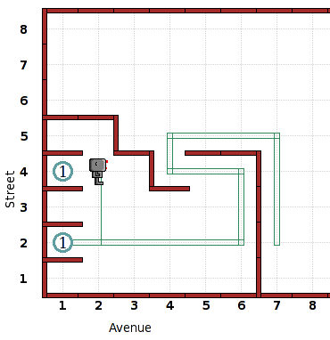

You are a robot named DEZ, a freshman
on your school's robot football team. After practice, a senior
robot
named ROY asked you to carry his pads into the locker room.
Unfortunately, you forgot and left them against the wall outside, so
he stuffed you in his locker. You need to go back outside and
retrieve his pads (represented by a beeper), bring them in and place
them in his locker to prevent even worse hazing tomorrow. As if
this
isn't bad enough, you sustained a mild concussion during practice
today, and the sensitivity to light is making it hard to see, so you
are just feeling your way around. You should walk forward
carefully until
you hit a wall, and then feel your way around the wall until you find
the pads. Additionally, you should remember the path you took to
find them, so that you can just retrace your steps and don't have to
open your eyes on the way back (you can't feel your way back because
your hands will be carrying pads). This will require the use of a
list. Finally, after you have put away the pads, go stand in
front
of your locker (the one two lockers away with the pads already in it)
and face to the right so that you can talk to reporters. One last
word of advice, don't yell at the reporters if they make a big deal
about the pads incident. The exact layout of the locker room can
vary, but you should have a clear shot at the right wall from your
starting position. The entrance is designed so that you can't
try to cheat and take a straight shot from the entrance to the
locker.
